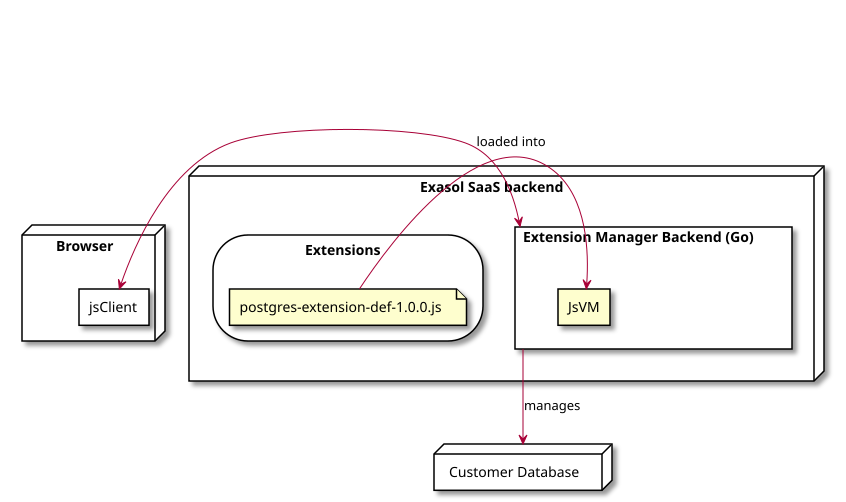
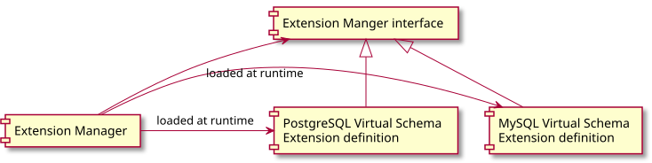
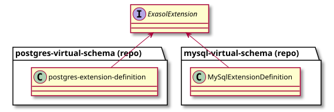
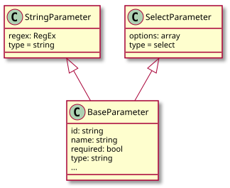
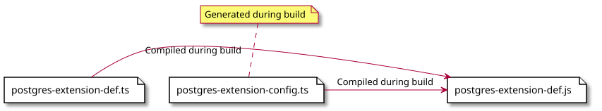
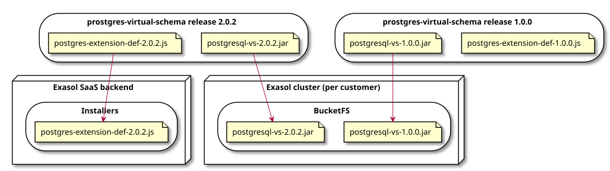
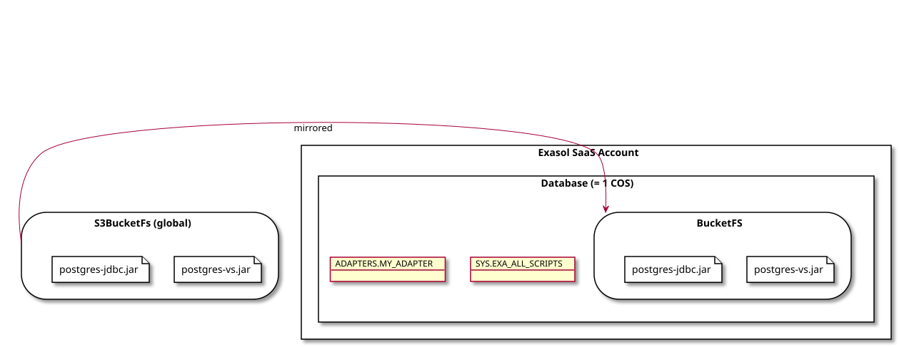
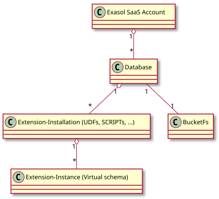
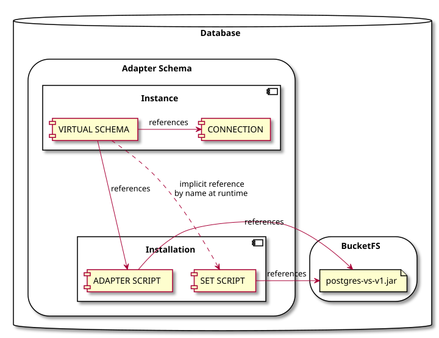

This document’s section structure is derived from the “arc42” architectural template by Dr. Gernot Starke, Dr. Peter Hruschka.
This section introduces technical system constraints.
Please refer to the System Requirement Specification for user-level requirements.
The extension installer is split into a backend (running in the Exasol SaaS backend, see design decisions) and a client (running in the SaaS UI).

The extension manager has an extension mechanism.
The extensions are integration projects maintained by Exasol. For now, it’s not possible to install third party extensions, since it would be a security risk.
The extension manager itself has no dependencies to the Virtual Schema projects. They are loaded at runtime.

dsn~extension-components~1
An extension might consist of JDBC driver, artifacts, configuration and database objects. Dependening on it’s nature a specific extension might not require all artifacts.
In the initial version when managing extensions EM requires the following components to be available in BucketFS and does not actively manage them: * JDBC driver * artifacts in BucketFS, e.g. jar files * 3rd party libraries
Instead, for managing extensions EM only considers the following database objects: * ADAPTER SCRIPT * SET SCRIPT * CONNECTION * VIRTUAL SCHEMA including mapping
Note: In the following cases a separate artifact in BucketFS is not required, as extension definition can inline these contents into the SQL statements of either adapter script or set script: * VIRTUAL SCHEMA mapping, json content * Lua scripts
When creating the required database objects EM will read all required arguments, configurations and credentials from the extension definition. The extension definition can also define parameters. EM will evaluate the parameter definitions and then ask the user to enter a value for each of the parameters. See also an example of the installation process.
Covers:
Needs: impl, utest, itest
dsn~extension-definition~1
Each extension might be implemented in an arbitrary programming language and typically are based on a so-called user defined function. In order to allow EM to manage multiple heterogenous extensions in a unique way, each extension is represented by small wrapper implementing a uniform interface. This wrapper is called an “extension definition”.
The interface is defined in extension-manager-interface:

Covers:
Needs: impl, utest, itest
dsn~extension-definitions-storage~1
The extension definitions are placed in a storage that is accessible from the extension-manager backend. Access from inside the database is not required.
Covers: * req~install-extension-artifacts~1 * req~define-configuration-parameters~1 * req~uninstall-extension~1
Needs: impl, utest, itest
dsn~versioning~1
Note that only the latest version of the extension definition is deployed.
That does not mean that it’s impossible to install older versions of an extension. Just the extension definition (the plugin for the extension manager) is always the latest version.
That means that the extension definition must be able to uninstall and update all old versions of its extension. That makes testing harder but is the only way to have the upgrade path tested.
The alternative to also version the extension definition would lead to unmaintained and untested code, since the old version would not be tested with newer DB versions.
Covers: * req~install-extension-artifacts~1 * req~uninstall-extension~1
Needs: impl, utest, itest
dsn~configuration-parameters~1
The extension definition also includes parameters for configuring the extension.
Covers: * req~define-configuration-parameters~1
Needs: impl, utest, itest
dsn~parameter-definitions~1
EM extension interface uses a flexible JSON structure to describe the parameters including conditional parameters.
Rationale: Individual extensions might have different parameters. For example a virtual schema for another database might support multiple connection protocols or libraries (e.g. ODBC and JDBC) that require different configuration options. Depending on the selected protocol EM can then show only the parameters for the selected protocol but hide unrelated parameters.
Example:
extension = {
// ...
condition: {
parameter: "connectorType",
operator: Operators.EQ,
value: "jdbc"
}
// ...
}While this requires interpretation of the JSON structure, it allows to transfer the parameter definition to the frontend as simple JSON in contrast to the alternative options considered.
Covers: * req~define-configuration-parameters~1 * req~parameter-types~1
Needs: impl, utest, itest
dsn~parameter-types~1
Each extension can define parameter definitions. The UI then shows a form with these parameters to the users and passes the values to the createInstance endpoint.
The following class hierarchy is used to model parameter definitions:

Covers: * req~parameter-types~1
Needs: impl, utest, itest
dsn~conditional-parameters~1
Conditions for conditional parameters are represented by JSON structures, see design decision against alternative options to represent conditional parameters.
Covers: * req~parameter-types~1
Needs: impl, utest, itest
dsn~parameter-versioning~1
Each parameter definition is attached to a specific version of the extension.
Rationale: Parameters can change over time, see Updates.
Covers: * req~define-configuration-parameters~1 * req~update-extension~1
Needs: impl, utest, itest
dsn~reuse-parameter-validation-rules~1
Parameter validation for both stages (frontend and backend) is configured in extension definition, see related Design Decision.
Covers: * req~validate-parameter-values~1
Needs: impl, utest, itest
dsn~parameter-validation-rules-simple~1
The extension definition can specify rules for parameter validation:
Covers: * req~validate-parameter-values~1
Needs: impl, utest, itest
dsn~parameter-validation-rules-complex~1
More complex validations involving multiple parameters can be defined via a JavaScript callback function that is executed only in the backend, not the frontend. That gives the extension definition the maximum flexibility while simplifying the validation in the frontend.
extension = {
//...
validate(parameterValues) {
if (parameterValues["connectorType"] === "jdbc" && !isValidJdbcParameter(parameterValues["additionalJdbcParameter"])) {
return "Invalid value for additionalJdbcParameter.";
}
}
}See design decision against a callback for the client side validation.
Covers: * req~validate-parameter-values~1
Needs: impl, utest, itest
dsn~list-extensions~1
EM builds the list of extensions based on the extension definitions. EM shows only extensions for which all components are available, e.g. required artifacts in BucketFS. The list also shows details about each extension: * status: available or installed * version
Covers: * feat~list-extensions~1
Needs: impl, utest, itest
dsn~extension-definitions-deployment~1
During the build of each virtual-schema project the extension definitions (written in TypeScript) are compiled to a single JavaScript file:

The built installers are attached to the release:
Release assets:
postgresql-vs-2.0.2.jar
postgresql-vs-2.0.2.jar.sha256
postgres-extension-def-2.0.2.js
postgres-extension-def-2.0.2.js.sha256A crawler collects the JARs and extension definitions and copies them to BucketFS at scheduled interval.
This crawler is at the moment not part of this project.

Covers: * req~install-extension-database-objects~1 * req~define-configuration-parameters~1 * req~uninstall-extension~1
Needs: impl, utest, itest
dsn~validate-parameters~1
EM validates parameters in two stages:
Covers: * req~validate-parameter-values~1
Needs: impl, utest, itest
dsn~installation-scope~1
The installation of an extension is scoped to an Exasol database (new term in SaaS context).


Covers: * req~install-extension-database-objects~1
dsn~installation~metadata~1
Extensions don’t store their own metadata. Instead they read information about existing adapter scripts, connection definitions and virtual schemas from the Exasol database itself. In most cases this is implemented by querying Exasol’s metadata tables.
However, for example for reading back the credentials stored in a connection, EM uses a temporary UDF that reads back the secret value.
Covers: * req~install-extension-database-objects~1
Needs: impl, utest, itest
dsn~installation~process~1
The following list describes the installation process using the extension for a virtual schema as example.
extension-manager-interface implemented by the extension is supported.ADAPTER SCRIPT exists for the required VS Jar.
SET SCRIPT with name IMPORT_FROM_<vs-name> exists using the expected file.
CONNECTION with the parameters entered by the user.VIRTUAL SCHEMA with the parameters entered by the user.Deployment view of an installed virtual schema:

Covers: * req~install-extension-database-objects~1
Needs: impl, utest, itest
dsn~update-extension~1
Covers: * req~update-extension~1 * req~install-extension-database-objects~1
Needs: impl, utest, itest
Most virtual schemas (including for example the postgres virtual schema) require an additional third-party JDBC driver. That driver for now must be copied manually into the BucketFS of all SaaS offerings, see Components of an Extension.
Most virtual schemas (including for example the postgres virtual schema) are implemented as a jar file in BucketFS. The jar file for now must be copied manually into the BucketFS of all SaaS offerings, see Components of an Extension.
One option would have been to implement everything in the JavaScript client. However, the developers discarded that option, since it does not allow us to upgrade the installed adapters automatically. An automated job can’t run in a browser.
The compiled JavaScript code is evaluated in the backend using a nested JavaScript interpreter.
By that it is isolated and can’t access resources like disk or network.
The developers decided to implement parameter validation as a TypeScript library extension-parameter-validator.
Rationale: By this a single implementation can be used for both validation stages: frontend and backend. The Go backend will use a JavaScript VM.
The developers decided against a callback for the client side validation of parameters. The main reason was that it would require to load code into the client at runtime. That would require to run eval() on code retrieved from a request. Even so the security risk of that seems acceptable, the developers decided against it since it would look suspicious.
The developers considered the following options:
Condition as JavaScript code in a string, e.g.
condition: "parameters.connectorType === \"jdbc\""
Condition as JavaScript callback, e.g.
While both options don’t need any interpretation logic they would require executing the JavaScript snippet in the frontend with eval() which poses a security risk.
Interpretation of the JSON structure was implemented in a separate library extension-parameter-validator written in TypeScript which is used by both the frontend and the backend. By this additional implementation effort need to be invested only once.
The developers decided to implement extension definitions in TypeScript.
The developers decided for a programming language like JS since some extensions have more complex installation mechanisms. Expressing this by just providing SQL scripts with placeholders quickly reaches its limit.
Especially the function for reading back parameter values can get a bit more complex.
We could also use Lua. The developers decided for JS since:
JavaScript does not provide type checking of the interface, hence not all potential incompatibilities with the Extension API can be found at compile time.
TypeScript is compiled to JavaScript, so no additional tooling is required at runtime.
TypeScript adds a bit of complexity at build time for transpiling TypeScript to JavaScript, but the developers decided to accept this additional effort.